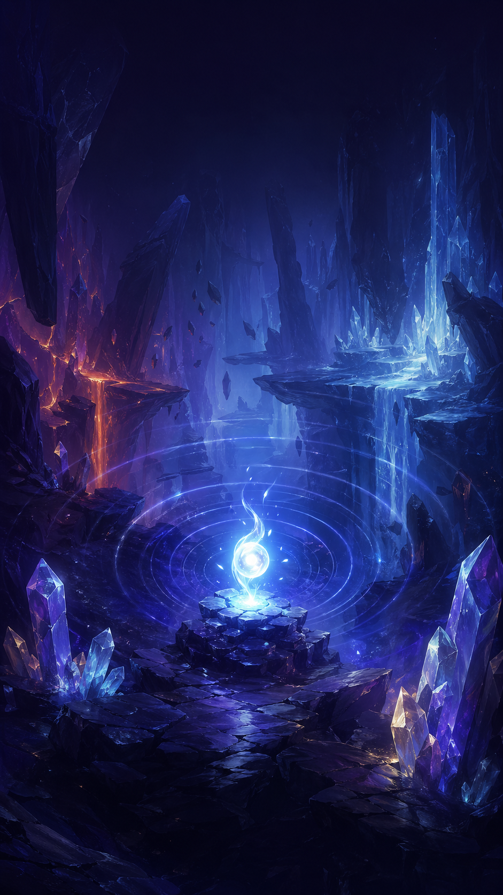
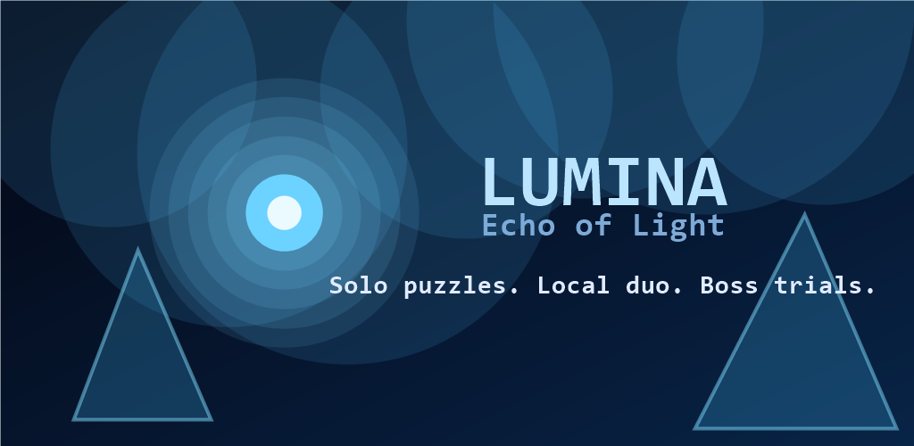

Echo To Reveal
Use echo pulses to expose hidden paths, doors, hazards, and enemies before the darkness closes back in.

Android puzzle adventure
Guide a tiny light through ancient ruins, hidden paths, portals, hazards, enemies, and boss arenas. Pulse the world with Echo, dash through danger, collect sparks, and unlock upgrades.
Lumina is designed around short, replayable levels with daily rewards, mission goals, stars, sparks, light cores, and upgrades that keep progress moving.

Use echo pulses to expose hidden paths, doors, hazards, and enemies before the darkness closes back in.
Play solo or share one device in local duo mode with mobile joystick controls.
The game works offline and does not collect personal information, show ads, or require a player account.